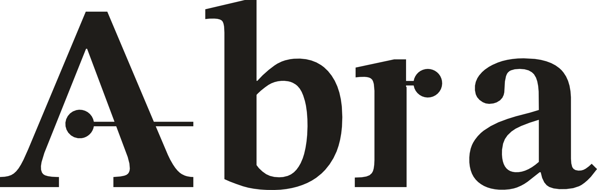

Offerta n. 2026-041 · 3. Fasi e criteri di accettazioneEsempioOgni fase si chiude con una misura e una decisione. Il criterio è scritto qui, prima di iniziare; il risultato lo scriviamo nel report di fase, anche quando è sotto le attese.1
| Fase | Cosa facciamo | Criterio di accettazione | Cosa vi resta | Importo |
|---|---|---|---|---|
| P01 sett. | Visita in reparto, video della postazione, dati di produzione | Processo descritto e firmato da voi | Scheda del processo | incluso |
| P13 sett. | Assessment: simulazione MuJoCo della postazione, scelta della piattaforma | Tempo ciclo simulato fino a 15 s su 200 prelievi2 | Report con numeri e limiti, modello di simulazione | 3.500 € |
| P24 sett. | Digital twin della cella, sviluppo del software di presa | Presa riuscita almeno 95% in simulazione su 5 formati di cartone | Codice nel vostro repository | 9.800 € |
| P33 sett. | Prove su robot vero nel Laboratorio Abra con i vostri cartoni | Scarto fra simulato e misurato fino al 10% | Video delle prove, verbale firmato | 8.400 € |
| P44 sett. | POC nel vostro reparto, su un turno, con il vostro personale | 8 ore senza intervento manuale | Dati del turno, analisi dei rischi | 14.600 € |
| P52 sett. | Consegna, formazione di due tecnici, manuale | I vostri tecnici rilanciano il ciclo da soli | Manuale rev 1.0, simulatore, team formato | 5.200 € |
Fig. 3 Tempo ciclo per formato di cartone: simulato in P1, misurato in P3 su 200 prelievi. Il cartone E resta sopra la soglia di 15 s: lo dichiariamo e proponiamo una presa diversa prima di P4. Valori di esempio.